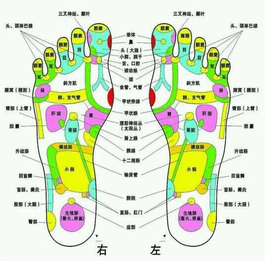

养生足贴的功能、原理、适用人群
足贴的功能： 排毒美容、清体养颜、促进新陈代???谢、增强免疫功能； 促进睡眠、舒缓疲劳、改善便秘、口臭及腹胀现象，塑身美体； 清除体内杂质、净化血液、改善色斑、痤疮、体臭、足臭； 祛除体内湿气，足底或关节部位的压力迅速减轻； 活化细胞，肌肤重现健康、亮泽状态，延缓衰老； 平衡人体脏器功能，血脂、血压、血糖逐步回复正常。 足贴作用原理： 足底排毒贴通过对足底及相关经络反射区的作用，各种精华成分渗透并参与循环系统，在循环过程中将体内细胞间滞留的毒素吸附出来，有效去除身体久积的毒素及湿气，神奇、稳定、持久的效果看得见也感受得到。 短时间内可消除皮肤色斑、座疮，改善便秘、消除口臭、足臭、塑身美体，降低血脂、血压、血糖，提高皮肤光泽度，改善睡眠并延缓衰老。贴在关节部位可起到消除疼痛及疲劳的作用，对关节炎、颈椎炎等都有非常好的效果。 足贴能从人体抽吸出不必要的水分、淋巴液、废油后变成浑浊液体，当你感到疲劳或有疼痛不舒服的地方，使用此贴后，贴袋会变为褐色或黑褐色，废油、废液统统被吸出。 老年人常见的风湿寒痛、肿胀、腿沉腿僵、扭伤等，贴后均会有很好的效果，通过排毒，疼痛会减轻，浮肿会消失，对肩痛、腰酸、关节痛等症状明显减轻。 足贴的成分： 核心中药粉、枇杷叶、薰衣草、电气石、天然淀粉、维他命C、稀有树木脂液等等十几种中药成分 适用人群： 1、美容人群 2、便秘、口臭、体臭、足臭 3、亚健康状态群 4、电脑工作者，工作压力大、长期受辐射人群 5、长时间站立、行走者 6、颈、肩、腰、腿疼痛肿胀人群 7、双足、双腿疲劳者 8、三周岁以上孩子就可以使用，男女老少皆宜
冬季养生小常识

在冬季，人们习惯把房子的门窗关得紧紧的，如此会造成室内二氧化碳浓度过高，若再加上汗水的分解产物，消化道排除的不良气体等，将使室内空气受到严重污染。 人在这样环境中会出现头昏、疲劳、恶心、食欲不振等现象。另外，冬季是一氧化碳中毒事件的好发季节，茵此一定要保持室内空气流通、新鲜。
冬季膳食的营养特点应该是：摄取充足的、与其曝寒和活动程度相适应的热能。营养素的比例，以蛋白质、脂肪和碳水化合物，分别占15~23%、25~35%、 60~70%为宜。矿物质的摄取量也应较平时需要略高一些。维生素的部分，应特别注意增加维生素C的需要量。摄取足够的动物性食品和大豆，以满足优质蛋白 质的需求， 适当增加油脂，其中植物油最好达到一半以上，此外，蔬菜、水果和奶类得摄取量也需充足。
冬季，由于自然界阴盛阳衰，寒气袭人，极易损伤人体的阳气，所以冬季养生应从敛阴护阳出发。首先要尽量早睡晚起。冬季早睡晚起，保持较长的休息时间，可使意 志安静，人体潜伏的阳气不受干扰，这是冬季保健首先要注意的。其次，要十分注意背部的保暖。背部是阳中之阳，风寒等邪气极易透过人体的背部侵入，引发疾 病。老人、儿童及体弱者冬日要注意背部保暖，避免阳气受到伤害。接着要避寒就暖。冬天气候较冷，人们要注意尽量待在温度室中的房间哩，减少外出次数。如要 外出，就要穿上保暖的衣服和鞋袜。另外要特别注意的是：冬天洗澡，稍有不慎就会引起伤风感冒，并诱发呼吸道疾病等。 茵此应减少洗澡次数，及洗澡过程的保暖 动作，幼儿、老年人及有心脑血管疾病的人应注意。